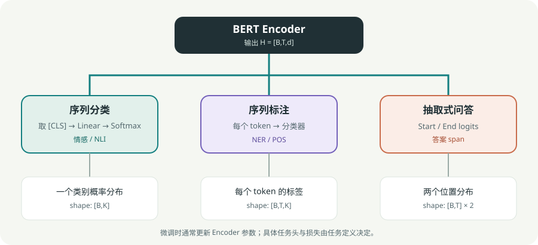

1. 预训练模型如何迁移到下游任务
BERT encoder 对长度为 T 的输入输出一组上下文隐藏状态 H ∈ R^B × T × d。其中每个位置都有一个向量。下游任务只需定义如何读取这些向量，以及如何把它们映射到标签空间。
微调（fine-tuning）通常会添加少量任务专属参数，同时更新 encoder 的预训练参数。特征抽取（feature-based）则冻结 encoder，把它输出的表示交给另一个任务模型。两者都能利用预训练表示，但参数是否继续更新、任务模型如何构建并不相同。

2. 单句分类：使用 [CLS] 表示
对情感分类或句子可接受性判断，输入通常写成：
[CLS] 句子 token ... [SEP]取最终层 [CLS] 位置的隐藏向量 C ∈ R^H，再接一个分类矩阵 W ∈ R^K × H，得到 K 个类别的 logits：
softmax 将 logits 转换为类别概率，交叉熵根据真实标签计算损失。论文中的 GLUE 分类实验使用 [CLS] 表示作为序列级表示。需要注意：这是一种经过预训练与任务微调形成的接口，不意味着未经训练的 [CLS] 向量在任意任务上天然就是高质量通用句向量。
3. 句对任务：把两段文本放进同一个序列
自然语言推断、释义识别和问答等任务需要同时处理两段文本。BERT 把它们拼接为一个输入序列：
[CLS] 句子 A ... [SEP] 句子 B ... [SEP]第一段通常使用 token type ID 0，第二段使用 token type ID 1。双向 self-attention 允许 A 中的 token 读取 B 中的 token，也允许 B 读取 A。模型因此可以在编码过程中直接建立跨段交互，而不必先独立编码两个句子再额外运行一个 cross-attention 模块。
这里的 A、B 是输入片段，不必严格等同于语法学上的完整句子。对于单句分类，通常只有一个文本段；对于 NLI，A 可以是 premise，B 可以是 hypothesis；对于抽取式问答，A 可以是 question，B 可以是 passage。
4. 序列标注：每个 token 都有输出
命名实体识别（NER）和词性标注属于 token-level 任务。编码器输出 H=[h_1,…,h_T]，对每个位置应用同一个分类器，得到该位置的标签分布。若词被拆成多个 WordPiece，训练和评测必须定义子词与原始词标签之间的对齐策略。
BERT 原始论文的 CoNLL-2003 NER 设置使用每个词的第一个 sub-token 表示作为该词的分类输入，并且没有在输出端增加 CRF 层。这是论文实验的具体设置，不应被写成所有 NER 实现唯一正确的方案。
5. 抽取式问答：预测答案的起点与终点
给定问题和段落，BERT 将二者拼接成一条序列。对每个 token 的最终表示 T_i，模型分别计算答案起点与终点分数。论文用两个可学习向量 S,E ∈ R^H 表示起点和终点查询：
候选答案 span (i,j) 的分数是 S· T_i+E· T_j，并要求 jge i。推理时还要限制答案最大长度，排除无效 span，并处理文档切窗造成的 token offset 映射。
对于 SQuAD v2.0，段落可能不包含答案。原始 BERT 的做法是把 [CLS] 位置作为 no-answer span 候选，并将其分数与最佳非空 span 比较，阈值在开发集上选择。
6. 原始论文结果：数字必须带上实验条件
BERT 论文报告在 11 项 NLP 任务上取得新的最佳结果。以下数字来自论文摘要和实验表格，展示的是论文报告值，不是本教程重新训练或复现的结果。
| 任务 / 基准 | 模型与设置 | 论文报告值 | 指标与定位 |
|---|---|---|---|
| GLUE | BERT-Large | 80.5 | 官方 GLUE leaderboard score；论文 §4.1 |
| MultiNLI | BERT-Large | 86.7 | matched accuracy；论文摘要 / Table 1 |
| SQuAD v1.1 | BERT-Large ensemble + TriviaQA | 93.2 | test F1；Table 2。不是裸单模型结果 |
| SQuAD v2.0 | BERT-Large single | 83.1 | test F1；Table 3 |
| SWAG | BERT-Large | 86.3 | test accuracy；Table 4 |
GLUE 的 80.5 是论文当时的官方 leaderboard score，与论文 Table 1 中排除 WNLI 的平均分不是同一个统计量。不同数据集的指标也不同：有的是 accuracy，有的是 F1，有的是相关系数。把这些值直接平均或横向比较会产生误导。
7. NSP 消融实验：读懂对照组才知道结论是什么
原始论文 Table 5 比较完整 BERT-Base、移除 NSP 的双向 MLM，以及同时移除 NSP 并改成左到右语言模型的设置。下面列出其中的开发集指标：
| 设置 | MNLI-m Acc | QNLI Acc | MRPC Acc | SST-2 Acc | SQuAD F1 |
|---|---|---|---|---|---|
| BERT-Base（MLM + NSP） | 84.4 | 88.4 | 86.7 | 92.7 | 88.5 |
| No NSP（保留双向 MLM） | 83.9 | 84.9 | 86.5 | 92.6 | 87.9 |
在这组原始 BERT-Base 实验中，移除 NSP 对 QNLI、MNLI 和 SQuAD 的影响更明显，对 MRPC 和 SST-2 的变化较小。第三个 LTR & No NSP 对照组还同时把双向 MLM 改成了左到右语言模型，因此它与完整 BERT 的差异不能全部归因于 NSP。
RoBERTa 后来在更大数据、更长训练、动态 masking 和不同 batch 配置下移除了 NSP，并报告了更好的结果。由于训练配方同时发生多项变化，严谨的表述应该是“NSP 的收益依赖训练配方”，而不是“单凭 RoBERTa 就证明 NSP 在任何条件下都无用”。
8. 复现边界与检查清单
复现论文结果不等于搭出相同的网络层数。至少要记录以下变量：
- 模型：Base / Large、cased / uncased、checkpoint 版本、tokenizer 与词表。
- 数据：数据集版本、训练/开发/测试切分、去重与清洗规则、标签对齐方法。
- 输入：最大长度、截断策略、padding 方向、句对打包、特殊 token。
- 优化：batch size、学习率、warmup、epoch、weight decay、随机种子、梯度累积。
- 评估：指标实现、官方脚本、阈值选择、是否使用 ensemble 或额外数据。
如果只运行一个小样本 demo 来确认 forward 过程，应该称为“实现验证”；如果没有相同的数据、算力、超参数和评测协议，就不应声称复现了论文的 benchmark 数值。
9. 交互：同一编码器，任务头怎样变化
切换任务，观察同一个 encoder 输出如何被不同读取方式使用。输出维度是概念示意，具体值取决于 batch、序列长度和类别数。
选择下游任务
输入：一条文本 Encoder 输出：H ∈ R[B,T,H] 读取方式：[CLS] 最终隐藏状态 任务头：Linear(H → K) + Softmax 输出：每条文本一个类别分布，shape [B,K]
关键结论
- BERT 的迁移接口是“共享 encoder + 任务头”；任务不同，读取 hidden state 的方式不同。
- 问答任务预测的是答案 span 的起点和终点；SQuAD v2.0 还需要显式处理无答案情况。
- 论文数字必须附带模型规模、数据集版本、指标、测试切分、额外数据和 ensemble 条件。
- 消融结论只适用于实际对照组；若多个变量同时变化，就不能把差异归因给单一因素。
原始资料与延伸阅读
- Devlin et al., BERT. 重点：§3.2、§4.1–4.4、§5.1、Appendix A.5。
- Wang et al., GLUE: A Multi-Task Benchmark and Analysis Platform for Natural Language Understanding, 2018.
- Rajpurkar et al., Know What You Don't Know: Unanswerable Questions for SQuAD, 2018.
- Liu et al., RoBERTa, 2019. 重点：§4.2 与整体训练配方。